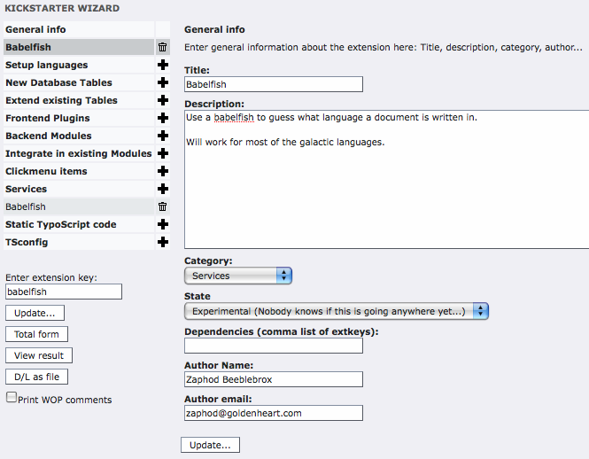
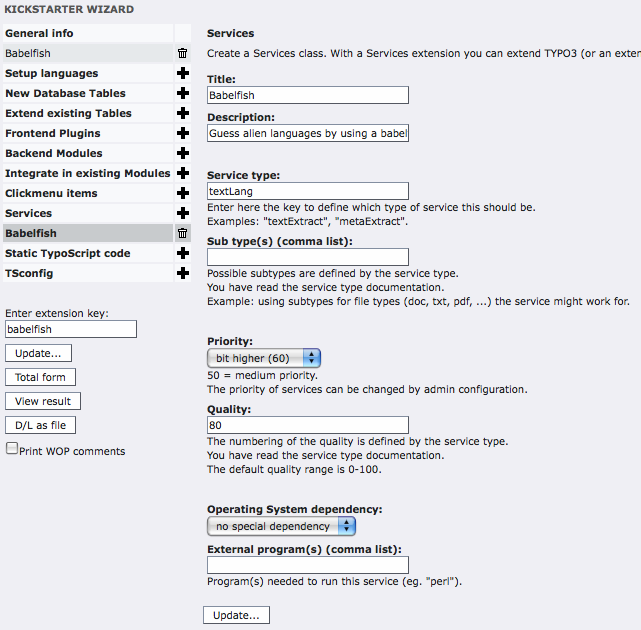

Extension
Key:
Language:
Keywords:
Copyright
2000-2008,
This document is published under the Open Content License
available from http://www.opencontent.org/opl.shtml
The content of this document is related to TYPO3
-
a GNU/GPL CMS/Framework available from www.typo3.org
Revised for TYPO3 4.2, March 2009
1. Freedom of implementation 3
2. Extend functionality with extensions 3
Introducing a new service type 7
This document describes the services functionality included in the TYPO3 core since version 3.6.0.
Services are designed to be overridden so that you can extend, improve or – in general – modify the behavior of the TYPO3 or any extension that uses services without having to change the original code of TYPO3 or of the extension.
Services are PHP classes inside of an extension similar to FE-plugins (or inside the core of TYPO3, for some base services). Usually when you use a class, you address it directly by creating an instance:
require_once(t3lib_extMgm::extPath('some_extension').'class.tx_some_extension_class.php');
$obj = t3lib_div::makeInstance('tx_some_extension_class');
Using a service class is done by calling a function which chooses the right service automatically by passing only the requested service type name and not the class name:
$serviceObj = t3lib_div::makeInstanceService('my_service_type');
The difference is that the class name itself and its usage is not hardcoded. The same service can be provided by different extensions. The service with the highest priority and quality is chosen automatically.
A service may be implemented multiple times to take into account different environments like operating systems (Unix, Windows, Mac), available PHP extensions or other third-party dependencies (other programming languages, binaries, etc.).
Imagine an extension which could rely on a Perl script for very good results. Another implementation could exist, that relies only on PHP, but gives results of lesser quality. With a service you could switch automatically between the two implementations just by testing the availability or not of Perl on the server.
Services are able to handle subtypes. Take the service of the type “fileMeta” which extracts meta data from files. It provides information depending on the file type for which it is implemented.
if (is_object($serviceObj = t3lib_div::makeInstanceService('fileMeta', $fileExtension))) {
$meta = serviceObj->getFileMeta($filename);
}
Here you can define a common API that doesn't vary whatever the type of file you are trying to read, greatly simplifying the implementation of code relying on such services. Any extension can add new subtypes handling, say 'mp3' for example, and this subtype will automatically be available to code that uses the “fileMeta” service.
There are different ways to use services, which are described below. But first a word about precedence.
Several services may be declared to do the same job. What will distinguish them is two intrinsic properties of services: priority and quality. Priority tells TYPO3 which service should be called first. Normal priorities vary between 0 and 100, but can be exceptionally set to higher values (no maximum). When two services of equal priority are found, the system will use the service with the best quality.
The priority is used to define a call order for services. The default priority is 50. The service with the highest priority is called first. The priority of a service is defined by its developer, but may be reconfigured (see “Configuration” below). It is thus very easy to add a new service that comes before or after an existing service, or to change the call order of already registered services.
The quality should be a measure of the worthiness of the job performed by the service. There may be several services who can perform the same task (e.g. extracting meta data from a file), but one may be able to do that much better than the other because it is able to use a third-party application. However if that third-party application is not available, neither will this service. In this case TYPO3 can fall back on the lower quality service which will still be better than nothing. Quality varies between 0-100.
More considerations about priority and quality can be found in the “Developer's Guide” below.
The most basic use is when you just want an object that handles a given service type:
if (is_object($serviceObj = t3lib_div::makeInstanceService('textLang'))) {
$language = $serviceObj->guessLanguage($text);
}
In this example a service of type 'textLang' is requested. If such a service is indeed available an object will be returned. Then the service type 'textLang' has a function guessLanguage() which is used.
There's no certainty that an object will be returned, for a number of reasons:
there might be no service of the requested type installed
the service deactivated itself during registration because it recognized it can't run on your platform
the service was deactivated by the system because of certain checks
during initialization the service checked that it can't run and deactivated itself
Note that when a service is requested, the instance created is stored in a global registry. If that service is requested again during the same code run, the stored instance will be returned instead of a new one. More details in “Service API” below.
If several services are available, the one with the highest priority (or quality if priority are equals) will be used.
A service can also be requested for not just a type, but a subtype too:
// find a service for a file type
if (is_object($serviceObj = t3lib_div::makeInstanceService('metaExtract',$fileType))) {
$serviceObj->setInputFile($absFile, $fileType);
if ($serviceObj->process('', '', array('meta' => $meta)) > 0
&& (is_array($svmeta = $serviceObj->getOutput()))) {
$meta = $svmeta;
}
}
In this example a service type “metaExtract” is requested for a specific subtype corresponding some file's type. With the returned instance, it then proceeds to retrieving whatever possible meta data from the file.
If several services are available for the same subtype, the one with the highest priority (or quality if priority are equals) will be used.
It is also possible to use services in a “chain”. This means using all the available services of a type instead of just one.
The method t3lib_div::makeInstanceService()
accepts a third parameter to exclude a number of services, using a
comma-separated list of service keys. This way you can walk through
all available services of a type by passing the already used service
keys. Services will be called in order of decreasing priority and
quality.
The following example is an extract of the user authentication process:
// use 'auth' service to find the user
// first found user will be used
$serviceChain='';
while (is_object($serviceObj = t3lib_div::makeInstanceService('auth', $subType, $serviceChain))) {
$serviceChain .= ',' . $serviceObj->getServiceKey();
if ($tempuser = $serviceObj->getUser($info, $subType, $this)) {
// user found, do something and exit the chain
...
break;
}
}
As you see the while loop is exited when a service gives a result. More sophisticated mechanisms can be imagined. In this next example – also taken from the authentication process – the loop is exited only when a certain value is returned by the method called:
// use 'auth' service to authenticate the user
// if one service returns FALSE then authentication failed
// a service might return 100 which means there's no reason to stop
// but the user can't be authenticated by that service
$serviceChain='';
while (is_object($serviceObj = t3lib_div::makeInstanceService('auth', $subType, $serviceChain))) {
$serviceChain .= ',' . $serviceObj->getServiceKey();
$serviceObj->initAuth($subType, $loginData, $authInfo, $this);
if (($ret = $serviceObj->authUser($tempuser))>0) {
// if the service returns >=200 then no more checking is needed
// useful for IP checking without password
if (intval($ret) >= 200) {
$authenticated = true;
break;
} elseif (intval($ret) >= 100) {
// Just go on. User is still not authenticated but there's no reason to stop now.
} else {
$authenticated = true;
}
} else {
$authenticated = false;
break;
}
}
In the above example the loop will walk through all services of the given type except if one service returns false or a value larger than or equals to 200, in which case the chain is interrupted.
Each service will have its own configuration which should be documented in their manual. There are however properties common to all services as well as generic mechanisms which are described below.
The
priority and other values of the services registration can be
overridden in typo3conf/localconf.php.
Example:
// raise priority of service 'tx_example_sv1' to 110$TYPO3_CONF_VARS['T3_SERVICES']['auth']['tx_example_sv1']['priority'] = 110;// disable service 'tx_example_sv1' $TYPO3_CONF_VARS['T3_SERVICES']['auth']['tx_example_sv1']['enable'] = false;
The syntax is:
$TYPO3_CONF_VARS['T3_SERVICES'][service type][service key][option key] = value;
Registration options are described in more details in “Implementing a service” below. Any of these options may be overridden using the above syntax. However caution should be used depending on the options. “className” and “classFile” should not be overridden in such a way. Instead a new service should be implemented using this alternate class.
Some services will not need additional
configuration. Others may have some options that can be set in the
Extension Manager. Yet others may be configured via local
configuration files (either typo3conf/localconf.php
or some extension's ext_localconf.php).
Example:
$TYPO3_CONF_VARS['SVCONF']['auth']['tx_example_sv1']['foo'] ='bar';
The syntax is:
$TYPO3_CONF_VARS['SVCONF'][service type][service key][config key] =value;
A configuration can also be set for all services belonging to the same service type by using the keyword “default” instead of a service key:
$TYPO3_CONF_VARS['SVCONF'][service type]['default'][config key] =value;
The available configuration settings should be described in the service's documentation. See “Service API” below to see how you can read these values properly inside your service.
It may also be necessary to provide configuration options for the code that uses the services (and not for usage inside the services themselves). It is recommended to make use of the following syntax:
$TYPO3_CONF_VARS['SVCONF'][service type]['setup'][config key] = value;
Example:
$TYPO3_CONF_VARS['SVCONF']['auth']['setup']['FE_alwaysFetchUser'] = true;
This configuration can be placed in any
configuration file (either typo3conf/localconf.php
or some extension's ext_localconf.php).
There's no API for retrieving these values. It's just a best practice
recommendation.
This chapter describes all you need to know to develop a new service, including advice to developing good services.
Every service belongs to a given service type. A service type is represented by a key, just like an extension key. In the examples above there was mention of the “auth” and “metaExtract” service types.
Each service type will implement its own API
corresponding to the task it is designed to handle. For example the
“auth” service type requires the two methods getUser()
and authUser(). If you introduce a new
service type you should think well about its API before starting
development. Ideally you should discuss with other developers.
Services are meant to be reusable. A badly designed service that is
used only once is a failed service. The development mailing list
(typo3.dev) is a good place to discuss new service types.
You should plan to provide a base class for your new service type. It is then easier to develop services based on this type as you can start by extending the base class. You should also provide a documentation, that describes the API. It should be clear to other developers what each method of the API is supposed to do.
The best way to get started when implementing a service is to use the Extension Kickstarter. It will help you create the skeleton of your service. In the Kickstarter you start by setting the general information and declaring that your extension is of type “Service”:

Then
move to the “Services” section if the left-hand menu and define a
first service. Your screen might look something like this:

Apart from the standard extension declaration file
(ext_emconf.php) and extension's icon
(ext_icon.gif), the Kickstarter will
create the following files:
ext_localconf.php
where the service is declared
sv1/class.tx_myext_sv1.php
where the code of the service resides
As can be seen the naming convention for services is very close to the one used for FE plug-ins, using “sv” instead of “pi”.
Registering
a service is done inside the ext_localconf.php
file. Let's look at what is inside.
<?php
if (!defined ('TYPO3_MODE')) {
die ('Access denied.');
}
t3lib_extMgm::addService($_EXTKEY, 'textLang' /* sv type */, 'tx_babelfish_sv1' /* sv key */,
array(
'title' => 'Babelfish',
'description' => 'Guess alien languages by using a babelfish',
'subtype' => '',
'available' => true,
'priority' => 60,
'quality' => 80,
'os' => '',
'exec' => '',
'classFile' => t3lib_extMgm::extPath($_EXTKEY).'sv1/class.tx_babelfish_sv1.php',
'className' => 'tx_babelfish_sv1',
)
);
?>
A service is registered with TYPO3 by calling
t3lib_extMgm::addService(). This method
takes the following parameters:
|
Parameter: |
Data type: |
Description: |
|---|---|---|
|
$extKey |
string |
The key of the extension containing the service. |
|
$serviceType |
string |
Service type of the service. |
|
$serviceKey |
string |
Unique key for the service. By default, the Kickstarter creates the key as “tx_myext_sv1” for the first service, “tx_myext_sv2” for the second service, etc. This may be changed freely, but the key should be explicit of the service's function. |
|
$info |
array |
Additional information about the service. This is described below. |
The additional information array defines the main properties of a service:
|
Property: |
Data type: |
Description: |
Default: |
|---|---|---|---|
|
title |
string |
The title of the service. |
|
|
description |
string |
The description. If it makes sense it should contain information about
|
|
|
subtype |
string / comma list |
The subtype is not predefined. Its usage is defined by the API of the service type.
Example: 'subtype' => 'jpg,tif', |
|
|
available |
boolean |
Defines if the service is available or not. This means that the service will be ignored if available is set to false. It makes no sense to set this to false, but it can be used to make a quick check if the service works on the system it installed:
Examples: // is the curl extension available we need
'available' => is_function('curl_exec'),
Only quick checks are appropriate here. More extensive checks should be performed when the service is requested and the service class is initialized. |
true |
|
priority |
integer |
The priority of the service. A
service of higher priority will be selected first.
Use a value from 0 to 100.
Higher values are reserved for reconfiguration by
Imagine that you have two solutions, a pure PHP one and another that depends on an external program. The PHP solution should have a priority of 50 and the other solution a lower one. PHP-only solutions should have a higher priority since they are more convenient in terms of server setup. But if the external solution gives better results you should set both to 50 and set the quality value to a higher value. |
50 (0-100) |
|
quality |
integer/float |
Among services with the same priority, the service with the highest quality by the same priority will be preferred.
The use of the quality range is defined by the service type. Integer or floats can be used. The default range is 0-100 and the default value for a normal (good) quality service is 50.
The value of the quality should represent the capacities of the services. Consider a service type that implements the detection of a language used in a text. Let's say that one service can detect 67 languages and another one only 25. These values could be used directly as quality values. |
50 (0-100) |
|
os |
string |
Defines which operating system is needed to run this service.
Examples: // runs only on UNIX 'os' => 'UNIX', |
|
|
exec |
string / comma list |
List of external programs which are needed to run the service. Absolute paths are allowed but not recommended, because the programs are searched for automatically by t3lib_exec. Leave empty if no external programs are needed.
Examples: 'exec' => 'perl', 'exec' => 'pdftotext', |
|
|
classFile |
string |
Created by the kickstarter
Example: t3lib_extMgm::extPath($_EXTKEY).'sv1/class.tx_myextkey_sv1.php' |
|
|
className |
string |
Created by the kickstarter
Example: 'tx_myextkey_sv1' |
|
The
Kickstarter will generate a skeleton PHP class for each service
defined. The example above will generate file
sv1/class.tx_babelfish_sv1.php, which
contains the following sample code:
/**
* Service "Babelfish" for the "babelfish" extension.
*
* @author Zaphod Beeblebrox <zaphod@goldenheart.com>
* @package TYPO3
* @subpackage tx_babelfish
*/
class tx_babelfish_sv1 extends t3lib_svbase {
var $prefixId = 'tx_babelfish_sv1'; // Same as class name
var $scriptRelPath = 'sv1/class.tx_babelfish_sv1.php'; // Path to this script relative to the extension dir.
var $extKey = 'babelfish'; // The extension key.
/**
* [Put your description here]
*
* @return [type] ...
*/
function init() {
$available = parent::init();
// Here you can initialize your class.
// The class have to do a strict check if the service is available.
// The needed external programs are already checked in the parent class.
// If there's no reason for initialization you can remove this function.
return $available;
}
/**
* [Put your description here]
* performs the service processing
*
* @param string Content which should be processed.
* @param string Content type
* @param array Configuration array
* @return boolean
*/
function process($content='', $type='', $conf=array()) {
// Depending on the service type there's not a process() function.
// You have to implement the API of that service type.
return false;
}
}
This sample code shows how a service class must
inherit from the t3lib_svbase base
class, which is described in more details below. It provides a
skeleton for the init() method which is
the single most important method for a service, as it defines – at
runtime – whether a given service is really available or not. This
method is also discussed in more details below.
The
skeleton process() method is just an
example of what you might want to implement in your service depending
on the API of the service type. In the example Kickstarter input
above, the “babelfish” service was declared as a “textLang”
type of service. In this case the specific service type API indeed
consists of just the process() method.
The sample code generated by the Kickstarter may change in the future.
All service classes must inherit from the base
service class t3lib_svbase, unless the
service type provides a specific base class (authentication services,
for example, inherit from tx_sv_authbase
instead). These specific classes should normally themselves extend
t3lib_svbase. This class provides a
large number of important or useful methods which are described
below, grouped by type of usage.
Most of the below methods are quite obvious,
except for getServiceOption().
|
Method: |
Description: |
|---|---|
|
getServiceInfo |
Returns the array containing the service's properties |
|
getServiceKey |
Returns the service's key |
|
getServiceTitle |
Returns the service's title |
|
getServiceOption |
This method is used to retrieve the value of a
service option, as defined in the |
The
getServiceOption() method requires more
explanations. Imagine your service has an option called “ignoreBozo”.
To retrieve it in a proper way, you should not access
$TYPO3_CONF_VARS['SVCONF'] directly, but
use getServiceOption() instead. In its
simplest form, it will look like this (inside your service's code):
$ignoreBozo = $this->getServiceOption('ignoreBozo');
This will retrieve the value of the “ignoreBozo” option for your specific service, if defined. If not, it will try to find a value in the default configuration. Additional call parameters can be added:
the second parameter is a default value to be used if no value was found at all (including in the default configuration)
the third parameter can be used to temporarily switch off the usage of the default configuration.
This allows for a lot of flexibility.
This set of methods handles the error reporting and manages the error queue. The error queue works as a stack. New errors are added on top of the previous ones. When an error is read from the queue it is the last one in that is taken (last in, first out). An error is actually a short array comprised of an error number and an error message.
The error queue exists only at run-time. It is not stored into session or any other form of permanence.
|
Method: |
Description: |
|---|---|
|
devLog |
Writes a message to the devlog, implicitly using the service key as a log key. Depends on the member variable “writeDevLog” being set to true (it's set to false by default). |
|
errorPush |
Puts a new error on top of the queue stack. |
|
errorPull |
Removes the latest (topmost) error in the queue stack. |
|
getLastError |
Returns the error number from the latest error in the queue, or true if queue is empty. |
|
getLastErrorMsg |
Same as above, but returns the error message. |
|
getErrorMsgArray |
Returns an array with the error messages of all errors in the queue. |
|
getLastErrorArray |
Returns the latest error as an array (number and message). |
|
resetErrors |
Empties the error queue. |
|
Method: |
Description: |
|---|---|
|
checkExec |
This method checks the availability of one or more executables on the server. A comma-separated list of excutables names is provided as a parameter. The method returns true if all executables are available. The method relies on
|
|
deactivateService |
Internal method to temporarily deactivate a service at run-time, if it suddenly fails for some reason. |
A lot of early services were designed to handle files, like those used by the DAM. Hence the base service class provides a number of methods to simplify the service developer's life when it comes to read and write files. In particular it provides an easy way of creating and cleaning up temporary files.
|
Method: |
Description: |
|---|---|
|
checkInputFile |
Checks if a file exists and is readable within the paths allowed by the TYPO3 configuration. |
|
readFile |
Reads the content of a file and returns it as
a string. Calls on |
|
writeFile |
Writes a string to a file, if writable and
within allowed paths. If no file name is provided, the data is
written to a temporary file, as created by |
|
tempFile |
Creates a temporary file and keeps its name in an internal registry of temp files. |
|
registerTempFile |
Adds a given file name to the registry of temporary files. |
|
unlinkTempFiles |
Deletes all the registered temporary files. |
These methods provide a standard way of defining or getting the content that needs to be processed – if this is the kind of operation that the service provides – and the processed output after that.
|
Method: |
Description: |
|---|---|
|
setInput |
Sets the content (and optionally the type of content) to be processed. |
|
setInputFile |
Sets the input file from which to get the content (and optionally the type). |
|
getInput |
Gets the input to process. If the content is currently empty, tries to read it from the input file. |
|
getInputFile |
Gets the name of the input file, after putting
it through |
|
setOutputFile |
Sets the output file name. |
|
getOutput |
Gets the output content. If an output file name is defined, the content is gotten from that file. |
|
getOutputFile |
Gets the name of the output file. If such file is not defined, a temporary file is created with the output content and that file's path is returned. |
These
methods are related to the general functioning of services. init()
and reset() are the most
important methods to implement when developing your own services.
|
Method: |
Description: |
|---|---|
|
init |
This method is expected to perform any necessary initialization for the service. Its return value is critical. It should return false if the service is not available for whatever reason. Otherwise it should return true. Note that's it's not necessary to check for OS
compatibility, as this will already have been done by
Executables should be checked, though, if any. The init() method is automatically called by
|
|
reset |
When a service is requested by a call to
This method can be used to clean up data that may have been set during the previous use of that instance. |
|
__destruct |
Clean up method. The base implementation calls
on |
The
little schema below summarizes the process of getting a service
instance and when each of init() and
reset() are called.
This section describes the methods of the TYPO3 core that are related to the use of services.
This extension management class contains three methods related to services:
|
Method: |
Description: |
|---|---|
|
addService |
This method is used to register services with
TYPO3. It checks for availability of service with regards to OS
dependency (if any) and fills the |
|
findService |
This method is used to find the appropriate service given a type and a subtype. It handles priority and quality rankings. It also checks for availability based on executables dependencies, if any. This method is normally called by
|
|
deactivateService |
Marks a service as unavailable. It is called
internally by |
This class contains a single method related to services, but the most useful one, used to get an instance of a service.
|
Method: |
Description: |
|---|---|
|
makeInstanceService |
This method is used to get an instance of a
service class of a given type and subtype. It calls on
As described above it keeps a registry of all instantiated service classes and uses existing instances whenever possible, in effect turning service classes into singletons. |